VFPU
- バージョン: V2R2
- ステータス: OK
- 日付: 2025/01/20
- コミット: xxx
用語説明
| 略語 | 正式名称 | 説明 |
|---|---|---|
| VFPU | Vector Float Point Unit | ベクトル浮動小数点ユニット |
| IQ | Issue Queue | イシューキュー |
設計仕様
- ベクトル浮動小数点 Mul 演算をサポート
- ベクトル浮動小数点 FMA 演算をサポート
- ベクトル浮動小数点 Div 演算をサポート
- ベクトル浮動小数点 Sqrt 演算をサポート
- fp32、fp64、fp16 をサポート
- RV-V1.0 版のベクトル浮動小数点命令をサポート
機能
VFPUモジュールはIssue Queueから発行されるuop情報を受け取り、fuTypeやfuOpTypeなどの情報に基づいて、ベクトル浮動小数点命令の計算を完了します。主にVFAlu、VFMA、VFDivSqrt、VFCvtの4つのモジュールを含みます。
VFAluは主にfadd関連の命令と、比較命令や符号注入命令などの他のシンプルな命令を担当します。特に、reduction sum命令もuopを分割する方式でこのモジュールで計算が行われます。
VFMAは主に乗算および乗算加算関連の命令を担当します。
VFDivSqrtは主に除算および平方根関連の命令を担当します。
VFCvtは主に形式変換および逆数推定関連の命令を担当します。
アルゴリズム設計
ベクトル浮動小数点演算ユニットの難点は、複数組の単一精度形式（オペランドと結果の浮動小数点数形式が同じ）の計算をサポートすることと、混合精度（オペランドと結果の浮動小数点数形式が異なる）の計算をサポートすることにあります。一般的な半精度（\(f16\)）、単精度（\(f32\)）、倍精度（\(f64\)）を例に、スカラ浮動小数点演算ユニットとベクトル浮動小数点演算ユニットの違いを比較します。
典型的な浮動小数点加算を例にすると、スカラ浮動小数点演算ユニットの場合、3種類の単一精度形式の計算をサポートするだけで済みます。この演算ユニットの入力オペランドと出力結果はどちらも\(64\)ビットであるべきなので、3種類の形式の計算をサポートする必要があります：
（1）\(1\)個の \(f64 = f64 + f64\)；
（2）\(1\)個の \(f32 = f32 + f32\)；
（3）\(1\)個の \(f16 = f16 + f16\)。
一見、これら3種類の形式の計算を完了するには3つのモジュールが必要に見えますが、浮動小数点数はすべて符号ビット、指数部、仮数部の3つの部分で構成されており、かつ高精度浮動小数点数の指数部のビット幅と仮数部のビット幅は低精度のものよりも大きいため、高精度浮動小数点数のハードウェア設計は低精度浮動小数点数のハードウェア要件を完全に満たすことができます。少し処理を加えた後、ハードウェアに\(Mux\)（マルチプレクサ）を追加する方式で複数の単一精度形式の計算に対応でき、しかも面積はわずかに増加するだけで済みます。
一方、ベクトル浮動小数点演算ユニットはベクトル操作をサポートする必要があり、ベクトル操作の特徴の1つはデータ帯域の利用率が高いことです。例えば、スカラ演算ユニットはインターフェースが\(64\)ビットであっても、\(f32/f16\)を計算する際、その有効データは\(32/16\)ビットしかなく、帯域利用率は\(50\%/25\%\)に急激に低下します。ベクトル演算ユニットのインターフェースも\(64\)ビットですが、単一精度形式\(f32/f16\)を計算する際、同時に\(2/4\)組の操作を行うことができ、帯域利用率は依然として\(100\%\)に達することができます。サポートされる単一精度形式の計算は以下の通りです：
（1）\(1\)個の \(f64 = f64 + f64\)；
（2）\(2\)個の \(f32 = f32 + f32\)；
（3）\(4\)個の \(f16 = f16 + f16\)。
複数組の同じ形式の浮動小数点数を同時に加算する必要があるため、ハードウェア設計はスカラよりも困難になりますが、高精度形式のハードウェアを再利用して低精度形式を計算することもできます。さらに、ベクトル浮動小数点演算ユニットがサポートする必要があるもう1つの特性は混合精度計算です。\(RISC-V\)ベクトル命令セット拡張は、混合精度計算を必要とする一連の\(widening\)命令を定義しており、浮動小数点加算演算ユニットは以下の4種類の計算形式もサポートする必要があります：
（1）\(1\)個の \(f64 = f64 + f32\)；
（2）\(1\)個の \(f64 = f32 + f32\)；
（3）\(2\)個の \(f32 = f32 + f16\)；
（4）\(2\)個の \(f32 = f16 + f16\)。
混合精度計算の設計難度は、複数組の単一精度形式よりもはるかに大きくなります。一方では、異なるデータ形式のオペランドは形式変換を行う必要があり、結果と同じ形式に変換してから計算するため、ロジックの複雑度が向上します。他方では、形式変換は回路のタイミングに対する圧力が非常に大きく、特に低精度の非正規化数を高精度浮動小数点数に変換する際にそうです。そのため、本文ではタイミング問題を解決するための高速データ形式変換アルゴリズムを特別に設計しました。
以上をまとめると、ベクトル浮動小数点演算器の設計の難点は、複数組の単一精度形式の実装と混合精度形式の実装にあります。本節では、ベクトル浮動小数点加算アルゴリズム、浮動小数点順次累加アルゴリズム、ベクトル浮動小数点融合乗加アルゴリズム、ベクトル浮動小数点除算アルゴリズムを順次紹介し、ベクトル浮動小数点演算器の設計の難点を解決し、周波数が\(3GHz\)に達する高性能ベクトル浮動小数点演算器を実現します。
ベクトル浮動小数点加算
浮動小数点加算は科学技術計算で最も頻繁に用いられる演算の一つである。概念は単純だが、従来の単経路アルゴリズムでは 2～3 回の符号付き加算が必要であり、遅延が大きい。最悪ケースで符号付き加算を 1 回に抑える二経路アルゴリズムは、単経路に比べ速度面で優位がある。本節では単一精度の単経路・二経路・改良二経路アルゴリズムを説明し、最後にベクトル浮動小数点加算アルゴリズムを示す。
浮動小数点加算は \(fp\_result = fp\_a + fp\_b\) と表せる。符号が同じ場合、仮数を揃えて加算するため「等価加算」と呼ぶ。符号が異なる場合は揃えた仮数で減算を行うため「等価減算」となる。非正規化数の指数部は 0 であるが、規格化指数に変換すると指数 1 に対応するため、指数差を求める際は指数 0 を 1 と見なす (規格化指数)。規格化指数の差の絶対値が規格化指数差となる。
単経路浮動小数点加算アルゴリズム
従来の単経路アルゴリズムは図に示すステップで構成される。
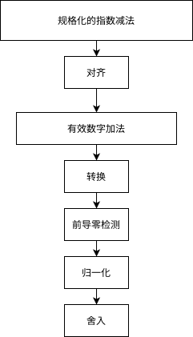
- 規格化指数の減算 (Exponent subtraction, \(ES\)): 規格化指数の差 \(d = |E_a - E_b|\) を求める。\(E_a\)、\(E_b\) は規格化指数。
- 整列 (Alignment, \(Align\)): 指数が小さい方の仮数を \(d\) ビット右シフトする。大きい方の指数を \(E_f\) とする。
- 仮数加算 (Significand addition, \(SA\)): 実行すべき演算 \(E_o\) に従って加算または減算する。\(E_o\) は両オペランドの符号から決まる。
- 符号変換 (Conversion, \(Conv\)): 結果が負なら符号絶対値表現に変換する。加算器を 1 回使い \(S_f\) を得る。
- 前ゼロ検出 (Leading zero detection, \(LZD\)): 左右どちらへ何ビットシフトするかを求め、\(E_n\) に記録する。右シフトで正、左シフトで負。
- 正規化 (Normalization, \(Norm\)): 仮数を \(E_n\) ビットシフトし、指数 \(E_f\) に \(E_n\) を加算する。
- 丸め (Rounding, \(Round\)): IEEE-754 の規則に従って丸め、必要であれば \(S_f\) の LSB に 1 を足す。この際に桁あふれが発生した場合は仮数を右シフトし、指数を 1 増やす。
二経路浮動小数点加算アルゴリズム
単経路アルゴリズムは多くのステップが直列で遅い。以下の最適化で高速化できる。
- 符号変換 (\(Conv\)) は結果が負のときのみ必要であり、指数差の符号を確認して仮数を交換すれば、常に大きい仮数から小さい仮数を引く形にできる。指数が等しい場合に負になるケースでは変換が必要だが、このルートでは丸めを行わないため、符号変換と丸めを並列化できる。交換によりシフタも 1 基で済む。
- 前ゼロ検出を仮数加算と並列に走らせ、クリティカルパスから排除する。特に減算で大きな左シフトが必要な場合に効果が大きい。
- これによりクリティカルパスは「規格化指数差→交換→整列→ (仮数加算 || 前ゼロ検出) → (変換 || 丸め) → 正規化」となる。整列と正規化は排他的で、\(d \leq 1\) かつ等価減算時は正規化が大きな左シフトになり、\(d > 1\) では整列が大きな右シフトとなる。両者を分離することで、大規模シフトを含むのはいずれか片方のみとなる。
単通路浮動小数点加算アルゴリズムと双通路浮動小数点加算アルゴリズムのステップを表に示す。双通路浮動小数点加算アルゴリズムでは、\(d \leq 1\) の経路における前処理ステップ（\(Pred\)）は、\(d\) の値に基づいて有効数字を整列させるために1ビット右シフトが必要かどうかを決定する。双通路浮動小数点加算アルゴリズムは、より多くのステップを並列実行することで速度を向上させるため、実装にはより多くのハードウェアが必要となる。
| 単通路浮動小数点加算 | 双通路浮動小数点加算アルゴリズム | |
|---|---|---|
| \(d \leq 1\) かつ等価減算 | \(d > 1\) または等価加算 | |
| 規格化された指数加算 | 前処理+交換 | 規格化された指数減算+交換 |
| 整列 | -- | 整列 |
| 有効数字加法 | 有効数字加法 または 前導零検出 | 有効数字加法 |
| 変換 | 変換 または 丸め | 丸め |
| 前導零検出 | -- | -- |
| 正規化 | 正規化 | -- |
| 丸め | 経路選択 | 経路選択 |
双通路浮動小数点加算アルゴリズムでは、等価減算の場合、\(SA\) ステップで一方の有効数字を2の補数にする。この補数化ステップと丸めステップは相互排他的であるため並列化が可能であり、最適化された双通路浮動小数点加算アルゴリズムを表に示す。
| \(d \leq 1\) かつ等価減算 | \(d > 1\) または等価加算 |
|---|---|
| 前処理+交換 | 規格化された指数減算+交換 |
| 有効数字加法変換 \(\|\) 丸め \(\|\) 前導零検出 | 整列 |
| 正規化 | 有効数字加法 \(\|\) 丸め |
| 仮数加算・変換 \(\|\) 丸め \(\|\) 前ゼロ検出 | 整列 |
| 正規化 | 仮数加算 \(\|\) 丸め |
| 経路選択 | 経路選択 |
IEEE の最近値丸め (RTN) モードでは \(A + B\) と \(A + B + 1\) を計算すれば全ての正規化ケースを処理できる (正方向・負方向丸めが必要なら \(A + B + 2\) も必要)。複数の仮数加算結果から最終丸め値を選ぶためにキャリー入力を活用すれば、補数化と丸めを同時に行え、加算器を 1 回節約できる。また結果の正規化で右シフト/シフトなし/左シフトのいずれも起こり得るため、キャリー入力は全パターンをカバーする必要がある。
改良二経路浮動小数点加算アルゴリズム
本節では改良二経路アルゴリズムを詳解する。\(d > 1\) の等価減算と等価加算を扱う経路を far、\(d \leq 1\) の等価減算を close と呼ぶ。無限大と NaN は別処理とし、far/close には含めない。
far 経路
アルゴリズムを図に示す。
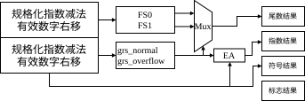
far経路では指数差 \(d > 1\) のため、小さい仮数を \(d\) ビット右シフトして整列させる。規格化指数差を高速に得るため二つの加算器で並列計算し、同時に \(E_{fp\_a}\) と \(E_{fp\_b}\) の大小比較を行い正しい差を選択する。- 指数比較結果をもとに大きい仮数と小さい仮数を選び、大きい指数を \(E_A\) とする。等価減算の場合は \(E_A\) を 1 減らし、減算結果の値域を調整して等価加算と揃える。調整後の仮数結果の値域は \([1,4)\) で、\([1,2)\) と \([2,4)\) の二つのケースを持つ。
- 小さい仮数を右シフトする。等価減算ではシフト前にビット反転して算術シフトを使い、等価加算では論理右シフトを行う。高位が 0 の場合は低位 (必要ビット数) だけを使ってシフトし、そうでなければ結果を 0 とする。指数差を算出した加算器のうち最低位から先に利用し、指数比較と差の値に基づいて最終的な右シフト後の仮数と
grs(guard, round, sticky) を求める。値域が \([1,2)\) と \([2,4)\) の双方に対応するgrsを算出する。 - 仮数加算を実行する。等価減算では前段で小さい仮数を反転しているため、\(A\) を大きい仮数、\(B\) を右シフト後の仮数とすると、\(A + B\) と \(A + B + 2\) を計算し、丸め結果を選択する。
- 最終結果を選択する。仮数 \(A + B\) の値域が \([1,2)\) か \([2,4)\) かで条件を分け、当該
grsと丸めモードからどの加算器結果を採用するかを決め、4:1 デコーダで仮数を選ぶ。指数は \(E_A\) (丸め後に 1 未満の場合) か \(E_A + 1\) (ケース2、あるいは丸めで 2 になった場合) となり、桁あふれが起こればオーバーフロー経路を選択する。farで発生しうる例外はオーバーフローと非正確のみである。
close 経路
close は \(d \leq 1\) の等価減算のみが対象で、\(d = 0\) と \(d = 1\) に細分できる。アルゴリズムを図に示す。
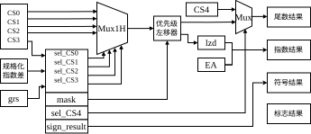
- 4 本の仮数減算器を並列に動かす。\(d = 0\) で \(fp\_a\) 仮数が大きい/ \(fp\_b\) 仮数が大きい、\(d = 1\) で \(fp\_a\) の指数が大きい/ \(fp\_b\) の指数が大きい、の 4 ケースを網羅する。第 1 減算器は \(fp\_a - fp\_b\)、第 2 は \(fp\_b - fp\_a\)、第 3 は \(2fp\_a - fp\_b\)、第 4 は \(2fp\_b - fp\_a\) を計算する。同時に指数比較から
grsを求め、\(d = 0\) では全て 0、\(d = 1\) では \(g\) のみ非ゼロになりうる。これら 4 本では丸め全パターンを生成できないため、第 5 の低速加算器で「指数大の仮数 − 小さい側を 1 ビット右シフト」も計算する。 - 4 本の減算器のどれを選ぶか条件を決める。\(d\)、 MSB、
grs、丸めモードを組み合わせて決定し、選んだ結果に対して前ゼロ検出 (\(LZD\)) と左シフトを行う。指数 \(E_A\) の値を考慮し、\(LZD\) と \(E_A\) でマスクを作って OR を取り、上位ビットを保護しつつシフトする。 - 第 5 減算器を選ぶ条件を決める。ここでは左シフト不要であるため低速加算器を使い、そのまま仮数結果とする。
- 指数と符号を求める。指数はステップ 2 の \(LZD\) を \(E_A\) から引いた値となり、第 5 減算器を選んだ場合は \(E_A\) を維持する。\(d = 1\) では指数が大きいオペランドの符号を採用し、\(d = 0\) では仮数の大小で決める。結果が 0 で丸め下方向のときは符号 1 とする。
ベクトル浮動小数点加算アルゴリズム
ベクトル加算器の出力幅は 64 ビットで混合精度と widening をサポートし、次のデータ形式を処理する。
- \(1\) 組の \(f64 = f64 + f64\)
- \(1\) 組の \(f64 = f64 + f32\)
- \(1\) 組の \(f64 = f32 + f32\)
- \(2\) 組の \(f32 = f32 + f32\)
- \(2\) 組の \(f32 = f32 + f16\)
- \(2\) 組の \(f32 = f16 + f16\)
- \(4\) 組の \(f16 = f16 + f16\)
モジュール分割
最初の 3 パターンは結果が 64 ビットなので 1 つのモジュールで共通化できる。\(f64 = f64 + f64\) で使う単精度加算器を流用し、高速形式変換により \(f32\) を \(f64\) に変換してから同じ演算を行う。
結果が \(f32\) のケースも同様で、\(f16 = f16 + f16\) を \(f32\) モジュールに取り込んで面積を節約する。これにより以下を処理できる。
- \(1\) 組の \(f32 = f32 + f32\)
- \(1\) 組の \(f32 = f32 + f16\)
- \(1\) 組の \(f32 = f16 + f16\)
- \(1\) 組の \(f16 = f16 + f16\)
このモジュールを 2 基用意し、不足する \(2\) 組の \(f16 = f16 + f16\) を個別の \(f16\) 専用加算器 2 基で補う。計 4 モジュールで全加算形式を網羅できる。
高速形式変換アルゴリズム
\(f16\) から \(f32\) への変換を例に説明する。
\(f16\) が正規化数であれば、\(f32\) に変換しても正規化数である。指数を \(f32\) のバイアスへ合わせればよく、\(f32\) の指数範囲は広いためオーバーフローは生じない。仮数は \(f16\) が 10 ビット、\(f32\) が 23 ビットなので、末尾に 13 ビットの 0 を付与するだけでよい。低精度→高精度の変換では結果は必ず正確である。
正規化 \(f16\) の指数幅は 5 ビットで実指数 \(E_{real} = E_{f16} - 15\)、正規化 \(f32\) は 8 ビットで \(E_{real} = E_{f32} - 127\) となる。両者を等置すると \(E_{f32} = E_{f16} + 112\) が得られる。112 の 8 ビット表現は 01110000 であり、単純に加算器で求める代わりに以下の規則で高速化できる。
- \(E_{f16}\) の最上位ビットが 0 の場合 \(E_{f16} + 112 = (0111, E_{f16}(3,0))\)
- \(E_{f16}\) の最上位ビットが 1 の場合 \(E_{f16} + 112 = (1000, E_{f16}(3,0))\)
この規則を使えば 1 段の Mux だけで指数変換が完了する。符号はそのまま、仮数は 0 埋めすれば良い。難関は \(f16\) が非正規化数のケースで、指数は全て 0、仮数の前ゼロ数が変換後の指数を決める。指数が 0 で LSB のみ 1 の \(f16\) を \(f32\) に変換すると指数は最小で \(-15-9 = -24\) になり、それでも \(f32\) の正規化範囲内に収まる。従って非正規化数では仮数に対する LZD と左シフトが必要となる。
Chisel の PriorityEncoder(Reverse(Cat(in, 1.U))) は LZD を簡潔に記述でき、従来の二分探索実装より合成結果が良好である。入力幅 5 の生成 Verilog は次の通り。
module LZDPriorityEncoder(
input clock,
input reset,
input [4:0] in,
output [2:0] out
);
wire [5:0] _out_T = {in,1'h1};
wire [5:0] _out_T_15 = {_out_T[0],_out_T[1],_out_T[2],_out_T[3],_out_T[4],_out_T[5]};
wire [2:0] _out_T_22 = _out_T_15[4] ? 3'h4 : 3'h5;
wire [2:0] _out_T_23 = _out_T_15[3] ? 3'h3 : _out_T_22;
wire [2:0] _out_T_24 = _out_T_15[2] ? 3'h2 : _out_T_23;
wire [2:0] _out_T_25 = _out_T_15[1] ? 3'h1 : _out_T_24;
assign out = _out_T_15[0] ? 3'h0 : _out_T_25;
endmodule
このコードは多くの段階的な\(Mux\)を使用しているように見えますが、合成器はこのようなコードのタイミングを比較的良好に合成します。このことに着想を得て、本文では\(lzd+\)左シフトを高速化するための、優先順位に基づく新しい左シフトアルゴリズムを設計しました。その\(Chisel\)コードは以下の通りです：
def shiftLeftPriorityWithF32EXPResult(srcValue: UInt, priorityShiftValue: UInt): UInt = {
val width = srcValue.getWidth
val lzdWidth = srcValue.getWidth.U.getWidth
def do_shiftLeftPriority(srcValue: UInt, priorityShiftValue: UInt, i:Int): UInt = {
if (i==0) Cat(
Mux(
priorityShiftValue(i),
Cat(srcValue(0),0.U((width-1).W)),
0.U(width.W)
),
Mux(
priorityShiftValue(i),
"b01110000".U-(width-i-1).U(8.W),
"b01110000".U-(width-i).U(8.W)
)
)
else Mux(
priorityShiftValue(i),
if (i==width-1) Cat(srcValue(i,0),"b01110000".U-(width-i-1).U(8.W))
else Cat(Cat(srcValue(i,0),0.U((width-1-i).W)), "b01110000".U-(width-i-1).U(8.W)),
do_shiftLeftPriority(srcValue = srcValue, priorityShiftValue = priorityShiftValue, i = i - 1)
)
}
do_shiftLeftPriority(srcValue = srcValue, priorityShiftValue = priorityShiftValue, i = width-1)
}
ここでは\(srcValue\)と\(priorityShiftValue\)の両方に\(f16\)の仮数を渡します。仮数の最上位ビットから判断を開始し、仮数の最上位ビットが\(1\)であれば\(srcValue\)の元の値を返すと同時に、対応する指数を返します（指数は複数の定数から選択され、仮数の中で最初の\(1\)が出現する位置に関連しています）。最上位ビットが\(0\)であれば、次のビットが\(1\)かどうかを判断し、\(1\)であれば\(srcValue\)を左に1ビットシフトして返します（ここでは実際の左シフトは不要で、左シフト後の上位ビットの結果を保持する必要がないため、直接ビット切り捨て操作を行い、ゼロを連結すればよいだけです）、同時に対応する指数を返します。以下同様に処理します。このように、1つの優先順位左シフターを使用して\(lzd+\)左シフトの2ステップの操作を同時に行い、さらに対応する\(Ef32\)も生成し、\(lzd\)に基づいて\(Ef32\)指数を計算する処理を省略することで、\(f16\)が非正規化数の場合に\(f32\)に変換する高速アルゴリズムを実現しました。\(f32\)を\(f64\)に変換する際に採用するアルゴリズムも類似しており、ここでは詳述しません。
ベクトル浮動小数点融合乗算加算アルゴリズム
浮動小数点融合乗算加算は\(fpa × fp\_b + fp\_c\)を計算しますが、中間の乗算計算\(fpa × fp\_b\)は範囲と精度の制限がないかのように行われ、丸めは行われず、最終的に目標形式に対して1回だけ丸めが行われます。FMAは通常パイプライン実装を採用し、ステップには主に乗算、加算、正規化シフト、および丸めが含まれます。 本節ではベクトル浮動小数点融合乗算加算アルゴリズムを紹介します。その機能には以下が含まれます：
（1）\(1\)個の\(fp64 = fp64 × fp64 + fp64\)；
（2）\(2\)個の\(fp32 = fp32 × fp32 + fp32\)；
（3）\(4\)個の\(fp16 = fp16 × fp16 + fp16\)；
（4）\(2\)個の\(fp32 = fp16 × fp16 + fp32\)；
（5）\(1\)個の\(fp64 = fp32 × fp32 + fp64\)。
（\(1\)）（\(2\)）（\(3\)）のソースオペランドとデスティネーションオペランドは全て同じ浮動小数点形式であり、（\(4\)）（\(5\)）の2つの乗数の幅は同じで、もう1つの加数と結果の幅は同じであり、かつ乗数の幅の2倍です。
スカラ単一精度形式アルゴリズム
計算フローは、まず2つの浮動小数点数の乗算の丸めなしの結果を計算し、次にこの丸めなしの積と第3の数を加算します。アルゴリズムのフローチャートは図に示す通りで、数式\(fp\_result = fp\_a × fp\_b + fp\_c\)で計算プロセスを表現します。図中、\(Sa、Sb、Sc\)はそれぞれ\(fp\_a、fp\_b、fp\_c\)の有効数字であり、\(Ea、Eb、Ec\)は\(fp\_a、fp\_b、fp\_c\)の指数です：
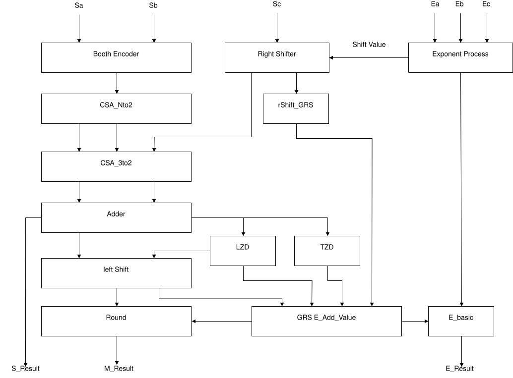
以下の説明を便利にするため、いくつかのパラメータを定義します。パラメータの意味と値は表の通りです：
| パラメータ | \(f16\) | \(f32\) | \(f64\) | 意味 |
|---|---|---|---|---|
| \(significandWidth\) | \(11\) | \(24\) | \(53\) | 有効数字幅 |
| \(exponentWidth\) | \(5\) | \(8\) | \(11\) | 指数幅 |
| \(rshiftBasic\) | \(14\) | \(27\) | \(56\) | \(fp\_c\)有効数字と積の有効数字を整列するために必要な右シフトビット数 |
| \(rshiftMax\) | \(37\) | \(76\) | \(163\) | \(fp\_c\)有効数字の最大右シフトビット数（この値を超えると\(g\)と\(r\)は両方とも\(0\)になる） |
符号なし整数乗算
2つの浮動小数点数の乗算の規則は、符号ビットの乗算、指数ビットの加算（単純な加算ではなく、バイアスを考慮する必要があります）、有効数字（隠れビットと仮数ビットを含む）の乗算です。有効数字の乗算は実際には固定小数点数の乗算であり、符号なし整数乗算の原理と同じです。
2進数の筆算乗算は原始的な乗算アルゴリズムであり、\(n\)ビットの\(C=A×B\)の筆算法は図の通りです。このプロセスでは\(n\)個の部分積が生成され、これらの部分積を桁をずらして加算します。
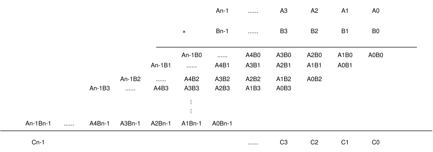
筆算法の乗算アルゴリズムは遅延が非常に大きく、乗算演算の最適化は主に2つの側面に集中しています：1つは部分積の個数を減らすこと（例えば\(Booth\)符号化）、もう1つは加算器による遅延を減らすこと（例えば\(CSA\)圧縮）です。
2つの浮動小数点数を乗算する場合、それらの有効数字が乗算されます。有効数字は符号なしであるため、符号なし整数乗算を使用して2つの有効数字の乗算を計算できます。符号なし整数乗算を実装するアルゴリズムには多くの種類があり、以下では3つのアルゴリズムを比較します。
方式一：直接乗算記号\(×\)を使用し、合成ツールに決定を任せる。
方式二：手作業で10進数の乗算を行う筆算法に類似した方法を使用します。2つの\(n\)ビット数の乗算は\(n\)個の部分積を生成し、次に\(n\)個の部分積に対して\(CSA\)圧縮（後述）を行い、2つの数の加算に圧縮します。
方式三：\(Booth\)符号化を使用して、\((n+1)/2\)（切り上げ）個の部分積を生成し、次に\(CSA\)圧縮で2つの数の加算に圧縮します。
表のデータは、\(TSMC7nm\)プロセスライブラリを使用して2つの\(53\)ビット符号なし整数を乗算（\(f64\)の場合）した結果です。目標周波数は\(3GHz\)、理論上の1サイクル時間は\(333.33ps\)ですが、クロック不確実性とプロセス角度偏差の問題を考慮する必要があり、バックエンドに設計余裕を残すため、1サイクルあたりの使用可能時間は約\(280ps\)です。したがって、明らかに1サイクル内で乗算を完了することはできず、実際には隠れビットを求めるのにも一定の時間が必要なため、1サイクル内で\(53bit\)の乗算を実現することはさらに不可能です。したがって、方式一は面積が小さく遅延も短いですが、方式一はパイプライン設計ができないため、方式二または方式三を選択するしかありません。方式三は方式二と比較して遅延が短く面積も小さいため、方式三を符号なし整数乗算の実装方式として選択します。
| アルゴリズム | 遅延（\(ps\)） | 面積（\(um²\)） | パイプライン化可能か |
|---|---|---|---|
| 方式一 | \(285.15\) | \(1458.95\) | いいえ |
| 方式二 | \(320.41\) | \(2426.34\) | はい |
| 方式三 | \(302.19\) | \(2042.46\) | はい |
Booth符号化
\(Booth\)符号化の目的は、乗算器の部分積の個数を減らすことです。2進数符号なし整数乗算\(C=A*B\)を例に、\(Booth\)符号化アルゴリズムを導出します。
以下の式は2進数符号なし整数の一般的な表現形式です。後続の変換のために、先頭と末尾にそれぞれ\(0\)を追加しますが、その値は変わりません。
等価変換後、隣接する2ビットの\(1\)は相殺されて\(0\)になります。連続した\(1\)がある場合、最下位の\(1\)は\(-1\)になり、最上位の\(1\)の1つ前のビットは\(0\)から\(1\)に変わり、その間の\(1\)は全て\(0\)に変わります。この変換がブース変換です。ブース変換は、連続した\(1\)の数が\(3\)以上の場合に簡略化の効果を発揮し、連続した\(1\)のビット数が多いほど、簡略化の効果が高くなります。しかし、上記の変換はハードウェア回路で最適化の効果を発揮することはできません。なぜなら、ある部分積が恒常的に\(0\)であることを保証できないからです。そのため、回路設計では一般的に改良されたブース符号化方式が採用され、部分積の数を真に減らすことができます。
再度等価変換を行いますが、今回は\(n\)にいくつかの制約を加えます。\(n\)が奇数であると仮定し、最後に1つのゼロを追加します。ゼロを追加した後の長さは偶数になり、さらに最上位ビットの前にゼロを1つ追加して、全体の長さを\(n+2\)にします。これは後の導出を容易にするためです。
等価変形後、多項式の項数が\(（n+1）/2\)（\(n\)が奇数の場合）になることがわかります。\(n\)が偶数の場合は、末尾にゼロを1つ、最上位ビットの前にゼロを2つ追加する必要があり、多項式の項数は\(n/2+1\)（\(n\)が偶数の場合）になります。奇数と偶数の場合を総合すると、多項式の項数は\(（n+1）/2\)の切り上げになります。元の2進数を\(LSB\)から開始して3ビットずつのグループに分け（最初のグループの最下位ビットには補助ビット\(0\)を追加する必要があり、最上位ビットは\(n\)の奇偶性に応じて、奇数の場合は\(0\)を1つ、偶数の場合は\(0\)を2つ追加します。その目的は、\(0\)を追加した後の長さを奇数にすることです）、隣接する2つのグループ間で1ビット重複します（下位グループの最上位ビットと上位グループの最下位ビットが重複します）、新しい多項式因子を構成します。これが改良されたブース符号化方式です。
2つの2進数を乗算する場合、乗数に対して改良型ブース符号化を行うと、得られる部分積の個数を半分に減らすことができます。被乗数を\(A\)、乗数を\(B\)とし、\(B_{2i+1}\)、\(B_{2i}\)、\(B_{2i-1}\)をそれぞれ\(X\)の連続する3ビットとし、\(i\)を自然数\(N\)、\(PP_i\)を\(i\)の異なる値に対応する部分積とします。\(B\)に対して改良されたブース変換を行い、\(A\)と乗算すると、\(Booth\)符号化と\(PP\)の真理値表は表のようになります。
| \(B_{2i+1}\) | \(B_{2i}\) | \(B_{2i-1}\) | \(PP_i\) |
|---|---|---|---|
| \(0\) | \(0\) | \(0\) | \(0\) |
| \(0\) | \(0\) | \(1\) | \(A\) |
| \(0\) | \(1\) | \(0\) | \(A\) |
| \(0\) | \(1\) | \(1\) | \(2A\) |
| \(1\) | \(0\) | \(0\) | \(-2A\) |
| \(1\) | \(0\) | \(1\) | \(-A\) |
| \(1\) | \(1\) | \(0\) | \(-A\) |
| \(1\) | \(1\) | \(1\) | \(0\) |
乗数の連続する3ビットの値に基づいて対応する部分積を求め、部分積の数を半分に減らします。これは乗数を4進数と見なして乗算を行うのと同じであるため、基\(4\)ブース符号化と呼ばれます。基\(4\)ブース符号化を採用した乗算は、従来の乗算演算と比較して最適化効果が非常に明確で、実装も容易であり、ほとんどのアプリケーション要件を満たすことができます。
\(Booth\)符号化を行う際には、5種類の部分積を計算する必要があり、\(0\)、\(A\)、\(2A\)、\(-A\)、\(-2A\)です。\(0\)と\(A\)は計算不要で、\(2A\)は左に1ビットシフトするだけで済み、\(-A\)と\(-2A\)は反転して1を加える操作が必要です。本文では、反転して1を加える処理を高速に行うアルゴリズムを紹介します。
原理を簡単に説明するため、\(f16\)を計算すると仮定します。有効数字は\(11\)ビットであり、\(6\)個の部分積が生成され、部分積の幅は\(22\)ビットです。図に示すように、図中の色付き位置の幅は\(12\)ビットで、\(A\)が\(0\)、\(1\)、または\(2\)を乗じる可能性を表します。最後の部分積の3ビット符号化は\(0\)xxであるため、その値は負数にはなり得ません。最後の部分積以外のすべての部分積が負数であると仮定すると、残りの各部分積を反転して1を加える必要があります。色付き部分は反転のみを行った後の結果を表し、現在の部分積に加える1を次の部分積の対応する位置に配置することで、部分積の和が変わらず、現在の部分積に1を加えることで生じるキャリーチェーンの問題を回避できます。最後の部分積は非負であるため、その1を加える処理を行う必要はありません。
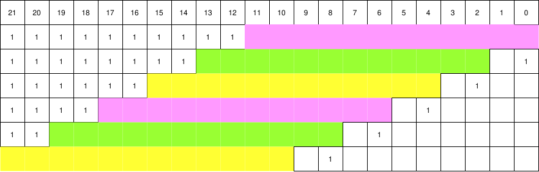
上図の\(1\)をまず加算して簡略化すると、下図の結果が得られます。
実際の部分積の値が正数の場合、上記の結果を修正する必要があります。つまり、色付き部分の左側の1ビット位置に1を加え、次の部分積の末尾に加える1をゼロに変更します。図に示すように、\(Si\)（\(i\)は\(0\)から開始）は第\(i\)の部分積の符号ビットを表し、これで汎用的な形式になります。色付き位置では\(0\)、\(A\)、\(2A\)、\(\sim A\)、\(\sim 2A\)のみを計算し、部分積の生成速度を向上させます。
ここでもう1点説明が必要です。部分積の和は乗算の結果ですが、部分積を加算する際にもキャリーが発生する可能性があります。このキャリーは乗算にとっては無意味ですが、乗算結果とより広いビット幅の数を加算する際には誤ったキャリーになります。修正方法は、部分積の最上位ビットにさらに1ビット追加することです。図に示します。
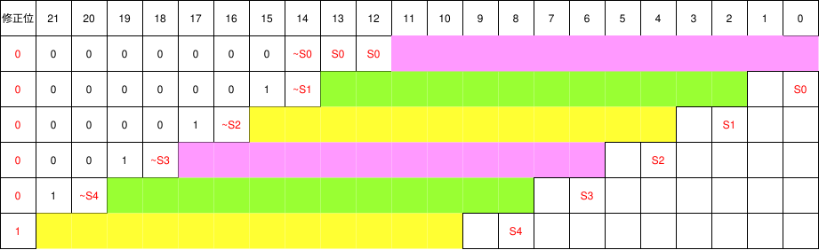
これにより、すべての部分積を加算した後のキャリーが正しいことを保証できます。ここまでで\(Booth\)符号化の紹介は終了です。なお、\(11\)ビット乗算を例に紹介しましたが、\(f16\)と\(f64\)の有効数字のビット数は奇数ですが、\(f32\)の有効数字のビット数は偶数であり、最上位ビットのゼロ追加に若干の違いがあります。他のプロセスは同様であるため、ここでは詳述しません。
CSA圧縮
\(Carry\)-\(Save\)-\(Adder\)はキャリー保存加算器であり、\(n\)個の加数をある種のロジックを通して\(m\)個の加数（\(m<n\)）に圧縮する役割を果たします。典型的なものは\(3\_2\)圧縮と\(4\_2\)圧縮です。
| 形式 | \(CSA3\_2\) 段数 | \(CSA4\_2\) 段数 | 圧縮シーケンス (→: \(CSA3\_2\), ⇒: \(CSA4\_2\)) |
|---|---|---|---|
| \(fp16\) | 1 | 1 | \(6 → 4 ⇒ 2\) |
| \(fp32\) | 3 | 1 | \(13 → 9 → 6 → 4 ⇒ 2\) |
| \(fp64\) | 3 | 2 | \(27 → 18 → 12 → 8 ⇒ 4 ⇒ 2\) |
指数の処理と右シフト
単純に考えると、積の指数と \(fp\_c\) の指数の大小に応じて双方の仮数を右シフトしなければならず、2 台のシフタが必要になるほか、乗算結果を待ってからシフトするため遅延が増大する。ここではシフタを 1 台に抑え、乗算と並列に整列処理を進める方法を示す。
指数は無符号値だが、実指数は偏差 bias を引いた値であり、非正規化数 (denormal) の場合は指数 0 を 1 と扱う。\(E\_{fix}\) を調整後の指数、\(E\_{bit}\) を元の指数とすると、指数の実値は次式となる。
乗算結果の実指数 \(E_{ab\_real}\) は次の通り。
バイナリ指数 \(E_{ab\_bit}\) はキャリーを保持した加算結果から偏差を減じて求める。
ここで +& はキャリー付き加算を表す。さらに右シフト基準 $rshiftBasic` を加えて \(E_{ab} = E_{ab\_bit} + rshiftBasic.S\) と定義し、これを積側の指数とみなす。
精度を落とさずに \(fp\_a × fp\_b\) と \(fp\_c\) を加算するため、双方の仮数幅を拡張する。\(fp\_c\) の仮数は \(3 × significandWidth + 4\) ビットに拡張し、g0,r0,g1,r1 を丸め用に確保する。
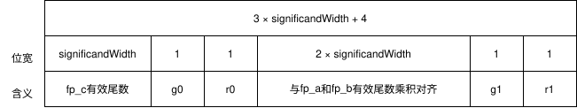
図の通り、\(fp\_c\) の仮数は積より \(significandWidth + 2\) ビット高い位置に配置される。積を仮に 1.xxx として合わせると、高位は \(significandWidth + 3\) ビット分シフトした形になる。これが \(rshiftBasic = significandWidth + 3\) の理由である。
\(fp\_c\_significand\_cat0 = Cat(fp\_c\_significand, 0.U(2 × significandWidth + 4))\) と定義する。\(E_{c\_fix} = E_{ab} = E_{ab\_bit} + rshiftBasic.S\) であればシフトは不要である。\(E_{c\_fix} > E_{ab}\) の場合は本来左シフトだが、間の g0 g1 がガード領域となり下位ビットは丸めにのみ影響するため、実際にはシフトせずともよい。\(E_{c\_fix} < E_{ab}\) のときは右シフトが必要で、シフト量は \(rshift\_value = E_{ab} - Cat(0.U, E_{c\_fix}).asSInt\) で与えられる。
シフト量は複数の加算結果から構成されるため、最下位ビットから順に シフト Mux の選択信号として用いる。ガード (g)、ラウンド (r)、スティッキー (s) のうち g と r は拡張時に確保してあるので追加計算は不要で、s は右シフトしながら逐次求める方が遅延が小さい。以下はその実装例である。
/**
* Mux で右シフトしつつスティッキーを生成する。
* 先に最下位ビットを使用し、出力幅は (srcValue + 1)。
*/
def shiftRightWithMuxSticky(srcValue: UInt, shiftValue: UInt): UInt = {
val vecLength = shiftValue.getWidth + 1
val res_vec = Wire(Vec(vecLength, UInt(srcValue.getWidth.W)))
val sticky_vec = Wire(Vec(vecLength, UInt(1.W)))
res_vec(0) := srcValue
sticky_vec(0) := 0.U
for (i <- 0 until shiftValue.getWidth) {
res_vec(i+1) := Mux(shiftValue(i), res_vec(i) >> (1 << i), res_vec(i))
sticky_vec(i+1) := Mux(
shiftValue(i),
sticky_vec(i) | res_vec(i)((1 << i) - 1, 0).orR,
sticky_vec(i)
)
}
Cat(res_vec(vecLength-1), sticky_vec(vecLength-1))
}
右シフトにはさらに高速化の工夫がある。\(rshift\_value\) の幅は \(exponentWidth+1\)、\(fp\_c\_significand\_cat0\) の幅は \(3 × significandWidth + 4\) であり、\(rshift\_value\) に含まれる上位ビットは溢れ検出に使える。例えば幅 5 の値で幅 7 の値を右シフトする場合 \(a(6,0) >> b(4,0)\) とすると、\(b(2)\) の最大値は 7 で既に \(a\) の幅に十分であるため、\(b(4)\) または \(b(3)\) に 1 が立てば結果は 0 になる。したがって \(Mux(b(4,3).orR, 0.U, a(6,0) >> b(2,0))\) のように簡略化できる。各浮動小数点形式の \(rshift\_value\) 幅は以下の通りである。
| データ形式 | \(fp\_c\_significand\_cat0\) 幅 | \(rshift\_value\) 幅 | 使用ビット幅 |
|---|---|---|---|
| \(f16\) | 37 | 6 | 6 |
| \(f32\) | 76 | 9 | 7 |
| \(f64\) | 163 | 12 | 8 |
\(rshift\_value\)の値に応じて3つの場合に分けられます。\(rshift\_value <= 0\)の場合は右シフトの必要がなく、\(sticky\)の結果は\(0\)です。\(rshift\_value > rshiftMax\)の場合、右シフト結果は\(0\)であり、\(sticky\)の結果は\(fp\_c\_significand\_cat0\)のORリダクションです。\(0 < rshift\_value <= rshiftMax\)の場合、右シフト結果と\(sticky\)は\(shiftRightWithMuxSticky\)で計算された結果です。
ここまでで、本小節では指数処理の方法、右シフター設計、右シフトプロセス中の\(grs\)の処理を紹介しました。
有効数字の加算
有効数字の加算
\(fp\_c\)の有効数字を右シフトした後の結果\(rshift\_result\)は、\(CSAn\_2\)で圧縮された2つの結果と加算する必要があります。\(fp\_c\)と\(fp\_a\)に\(fp\_b\)を乗じた結果の符号が反対になる可能性があり、反対の場合は減算を行う必要があります。減算結果が負数になる可能性があるため、正負を判定するために符号ビットを1ビット追加する必要があります。\(fp\_c\_rshiftValue\_inv\)は、符号が反対かどうかに基づいて\(rshift\_result\)（符号ビットは\(0\)を追加）または\(rshift\_result\)の反転（符号ビットは\(1\)を追加）を選択します。したがって、\(fp\_c\_rshiftValue\_inv\)と\(CSAn\_2\)で圧縮された2つの結果を加算する必要があります。ただし、減算を行う際、\(fp\_c\_rshiftValue\_inv\)は\(rshift\_result\)を反転するだけであり、右シフトした\(grs\)が全て\(0\)の場合には最下位ビットに\(+1\)する必要があります。この\(+1\)を\(CSAn\_2\)で圧縮された2つの結果のうちの\(carry\)ビットに配置します。\(carry\)ビットは恒常的に\(0\)であるため、このビットに直接配置することで加算器の使用を節約し、面積を削減できます。これら3つの数のビット幅は異なります。\(fp\_c\)の有効数字を右シフトした後の結果のビット幅は\(3×significandWidth+4\)であり、\(CSAn\_2\)で圧縮された2つの結果のビット幅は\(2×significandWidth+1\)です。\(+1\)の理由は、前述の通り部分積を1ビット拡張して進位が正しいことを保証するためです。異なるビット幅の3つの和を計算する戦略は、まず\(CSAn\_2\)で圧縮された2つの結果の下位\(2×significandWidth+1\)ビットと\(rshift\_result\)の下位\(2×significandWidth\)ビット（最上位ビットに1ビットの\(0\)を連結して\(2×significandWidth+1\)ビットにする）を1回\(CSA3\_2\)圧縮した後、\(CSA3\_2\)圧縮された2つの結果を加算します。これを\(adder\_low\_bits\)とします。同時に、\(rshift\_result\)の上位\(significandWidth+4\)ビットに\(+1\)を計算し、次に下位\(2×significandWidth+1\)ビットの加算結果の最上位ビットが\(1\)かどうかに基づいて、\(fp\_c\_rshiftValue\_inv\)の上位\(significandWidth+4\)ビットまたは\(fp\_c\_rshiftValue\_inv\)の上位\(significandWidth+4\)ビットに\(+1\)したものを選択します。これを\(adder\_high\_bits\)とします。
減算時に右シフトした\(grs\)を反転して1を加える処理も考慮する必要があります。最終的な有効数字の加算結果\(adder\)（右シフトした\(grs\)を含む）の構成は：\(adder\_high\_bits\)、\(adder\_low\_bits\)、右シフトした\(grs\)（減算時は反転して1を加える）です。\(adder\)は負数になる可能性があるため、\(1bit\)を拡張して\(adder\)の符号判定にのみ使用し、その後は使用しません。\(adder\_inv\)は、\(adder\)が負数の場合に反転を行い、かつその符号判定ビットを除去したものです。
LZD、左シフト、丸め前後の仮数結果
\(adder\_inv\)を計算した後、\(adder\_inv\)に対して前導零検出を行い、左シフトする必要があるビット数を決定し、さらに仮数結果を正規化して丸めを行う必要があります。
\(adder\_inv\)の\(LZD\)を求める際には指数の制限の問題があります。\(E\_greater\)を\(Eab\)（\(fp\_a\)と\(fp\_b\)を乗じた指数結果）とすると、左シフトの値は\(E\_greater\)よりも大きくすることはできません。なぜなら、\(E\_greater\)に等しい場合、指数結果はすでに全て\(0\)になっているためです。この問題を解決するために、浮動小数点加算器と同様に、左シフト時に\(mask\)を使用して制限を行います。
\(adder\)が負数の場合、\(-adder\)は\(adder\)を反転して\(+1\)するべきですが、\(+1\)は長い進位連鎖を生成するため、反転操作のみを行い、次に\(adder\_inv\)の\(LZD\)を計算します。この時、1ビットの偏差が発生する可能性があります。\(adder\)を反転した後、末尾が全て連続した\(1\)になる場合、この時さらに\(1\)を加えると最上位の\(1\)が進位を生成します。1ビットの偏差を解決する方法は、\(adder\)に対して末尾零検出（\(TZD\)）を行うことです。\(LZD + TZD = adder\)の幅の場合、\(adder\)を反転した後、末尾が全て連続した\(1\)になり、この場合は左シフト結果を修正する必要があります。左シフト修正後、丸めなしの結果が得られ、丸めなしの結果に\(+1\)することで丸め後の結果が得られます。
最終結果
\(adder\)の正負に基づいて符号ビット結果が得られます。\(grs\)の計算は、第5ステップの右シフトと第7ステップの左シフトプロセスを同時に組み合わせる必要があります。丸め戦略は\(after \quad rounding\)を採用します。\(underflow\)を判定するために、\(underflow\)判定専用の\(grs\)をもう1組使用する必要があります。丸めモードと\(grs\)に基づいて丸めが必要かどうかを得て、仮数結果を選択し、指数結果は丸め状況に基づいて得られます。
入力オペランドに特殊値（\(NaN\)、無限大、ゼロなど）が含まれる場合、結果は個別に計算され、実際の入力数の状況に応じて特殊結果と通常結果から1つを選択します。フラグビット結果は、ゼロ除算フラグビット以外の他の4種類が生成される可能性があります。
ベクトル単一精度形式アルゴリズム
ベクトル演算の主な設計思想は、タイミング要件を満たす状況下でハードウェアを共用することです。
\(Booth\)符号化プロセスにおいて、\(f16\)は\(6\)個の\(pp\)を生成し、\(f32\)は\(13\)個の\(pp\)を生成し、\(f64\)は\(27\)個の\(pp\)を生成します。したがって、\(Booth\)符号化時に\(f64\)が生成する\(27\)個の\(pp\)の位置には、2つの\(f32\)が生成する\(13\)個の\(pp\)を配置でき、同様に\(f32\)が生成する\(13\)個の\(pp\)の位置には、2つの\(f16\)が生成する\(6\)個の\(pp\)を配置できます。このようにして、1セットの\(CSA\_27to2\)圧縮を引き続き共用できます。ベクトル共用\(Booth\)符号化の図は以下の通りです。
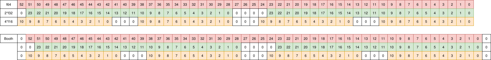
\(fp\_c\)の仮数を右シフトする際、\(f64\)と\(f32\)のうちの1つの仮数右シフトは1つの右シフターを共用でき、その他の右シフターは全て独立しています。
\(CSA\_3to2\)も共用であり、第3のオペランドは\(fp\_c\)の仮数右シフトの結果から来ます。\(2\)個の\(f32\)または\(4\)個の\(f16\)の仮数右シフトの結果を連結し、共用の\(Booth\)符号化圧縮後の2つのオペランドと一緒に\(3\_2\)圧縮を行います。
圧縮完了後の加算器も共用であり、異なる形式に異なるビットを割り当て、ビットごとに区切ることで下位ビットの進位が上位ビットの結果に影響しないようにします。
\(LZD，TZD\)、左シフターの共用思想は右シフターと同様であり、\(f64\)と\(f32\)のうちの1つは共用で、その他は独立しています。
ベクトル混合精度形式アルゴリズム
ベクトル混合精度形式の計算には2種類あります：
(1) \(2\)個の\(fp32 = fp16 × fp16 + fp32\);
(2) \(1\)個の\(fp64 = fp32 × fp32 + fp64\)。
2つの同じ幅の乗数に対して、本質的にはまだ指数の加算と有効数字の乗算であり、浮動小数点加算のように最初にそれらの形式を結果と同じ形式に変換する必要はなく、単純にビット幅を拡張するだけで済みます。指数の上位ビットにゼロを追加し、仮数の下位ビットにゼロを追加して、高精度の浮動小数点オペランドと整列させます。整列後、単一精度形式に従って計算を行えば良いです。
ベクトル浮動小数点除算アルゴリズム
除算は現代プロセッサで代表的な浮動小数点関数の一つである。ハードウェア実装には、減算に基づく線形収束の数字反復法と、乗算に基づく二次収束の乗算法がある。減算型の数字反復法はエネルギー効率と面積の点で有利であり、本節以降で扱う数字反復法はすべて減算型を指す。標準的な浮動小数点精度では、倍精度・単精度・半精度とも数字反復法が高速である。数字反復除算では各反復で商の 1 桁を得るため、除数に依存しない単純な Radix-4 選択関数を実現するには、除数を 1 に十分近い値へ調整する必要がある。このスケーリングは数字反復の前に行う。
数字反復法は性能・面積・消費電力のバランスが良く、高性能プロセッサで広く用いられている。本設計では \(SRT\) (Sweeney-Robertson-Tocher Division) に基づく Radix-64 除算を採用し、1 サイクルあたり 6 ビットの商を算出する。オーバーヘッド削減のため、Radix-64 の 1 反復を 3 回の Radix-4 反復に分割し、連続する Radix-4 反復の間で推測アルゴリズムを使って遅延を抑える。
スカラ浮動小数点除算アルゴリズム
本設計の Radix-64 スカラ除算器は、入力と結果が規格化数であれば \(f64\)/\(f32\)/\(f16\) に対してそれぞれ 11/6/4 サイクルの遅延で演算できる。これにはスケーリングと丸めの周期を含む。入力または結果が非正規化数の場合は 1～2 サイクルの追加正規化が必要となる。
指数は容易に求められるため、焦点は仮数除算である。仮数除算器は被除数仮数 \(x\) と除数仮数 \(d\) の浮動小数点除算を実行し、商 \(q = x/d\) を得る。両オペランドは規格化数で \(x,d ∈ [1,2)\) とする。非正規化数も許容するが、数字反復の前に正規化が必要である。両オペランドが \([1,2)\) に正規化されていれば結果は \([0.5,2)\) に収まり、丸め用に LSB の右側に 2 ビット (ガードとラウンド) を確保する。
結果が正規化される場合はガードビットを丸めに使用し、\(q ∈ [1,2)\) となる。未正規化のままならラウンドビットを丸めに用い、\(q ∈ [0.5,1)\) である。このとき結果を 1 ビット左シフトして正規化し、ガードビットとラウンドビットがそれぞれ LSB とガードになる。丸めを簡単にするため結果は必ず \(q ∈ [1,2)\) に強制する。唯一 \(x < d\) のときに \(q < 1\) となるが、初期に検出して被除数を 1 ビット左シフトし、\(q = 2 × x/d\)、\(q ∈ [1,2)\) とする。この場合指数は適切に調整する。
除算アルゴリズムには Radix-4 の数字反復を用いる。各ループで 3 回の反復を行い、商を数字集合 {\(−2, −1, 0, +1, +2\)} で表現する。基数 \(r = 4\)、数字集合の最大値 \(a = 2\) である。各反復では選択関数により商の 1 桁を得る。除数に依存しない選択関数を得るため、除数は 1 付近へスケーリングする。結果の正しさを保つため、被除数も同じ倍率でスケーリングする。
基数 4 のアルゴリズムでは反復ごとに商の 2 ビットを得る。1 サイクルで 3 回の反復を行うため 1 サイクル当たり 6 ビットの商を生成し、Radix-64 除算器に相当する。最初の整数桁の商は {\(+1, +2\)} のみを取り、残りの桁より計算が単純である。これをオペランドの前スケーリングと並列に求めることで単精度浮動小数点の反復を 1 回節約できる。一方、例外的なオペランドでは早期終了モードを備える。被除数または除数が \(NaN\)、無限大、ゼロのいずれか、あるいは両オペランドが規格化数で除数が 2 の累乗の場合に早期終了し、後者では被除数の指数を減じるだけで結果を得る。Radix-64 除算器の主な特徴をまとめる。
- 除数と被除数の前スケーリング。
- 最初の商桁を前スケーリングと並列に計算。
- スケーリング後の被除数と除数を比較し、被除数を左シフトして \([1,2)\) に調整。
- 1 サイクルあたり 3 回の Radix-4 反復、計 6 ビットの商を生成。
- 半精度・単精度・倍精度をサポート。
- 非正規化数に対応し、反復前に 1 サイクルで正規化。
- 例外オペランドで早期終了。
数字反復除算アルゴリズム
数字反復除算では各反復で基数 \(r\) の商デジット \(q_{i+1}\) と余りを計算し、余り \(rem[i]\) から次のデジットを得る。高速反復のため余りは符号付冗長表現で保持し、Carry-Save 形式の正・負 2 本で表現する。本設計では基数 \(r = 4\) に対し基数 \(−2\) の符号付表現を選んだ。第 \(i\) 回反復前の部分商は次式で定義される。
除数を 1 付近へスケーリングした後の Radix-4 アルゴリズムでは、商と余りは次式で表される。
ここで \(\widehat{rem}[i]\) は \(rem[i]\) の上位数ビットから得られる推定値である。本アルゴリズムでは余りの上位 6 ビット (整数 3 ビット、小数 3 ビット) だけで十分である。各反復で現在の余りから商デジットを得て次の余りを計算する。反復回数 \(it\) は次式で与えられる。
ここで \(n\) は丸めに必要なビットを含む結果のビット数である。除算の遅延、すなわちサイクル数は反復回数と各サイクルの反復数に比例する。1 サイクルで 3 回の反復を行い 6 ビットの商を得るため、Radix-64 除算に相当する。規格化浮動小数点数に必要な周期 \(cycles\) は次式で求まり、反復に要する \(it/3\) サイクルに加えて前スケーリングと丸めの 2 サイクルが加算される。
Radix-4 を含む数字反復除算の例は [38] に紹介されている。単純な実装の概略図を図に示す。余りの上位ビットのみを商選択に用い、余りは Carry-Save で冗長表現のまま更新する。商選択では余りの \(t\) 本の上位ビットを進みキャリー加算器 (CPA) で非冗長形式へ変換する必要があるが、これでは遅すぎるため、反復間で余り計算と商選択を推測的に行い高速化する。
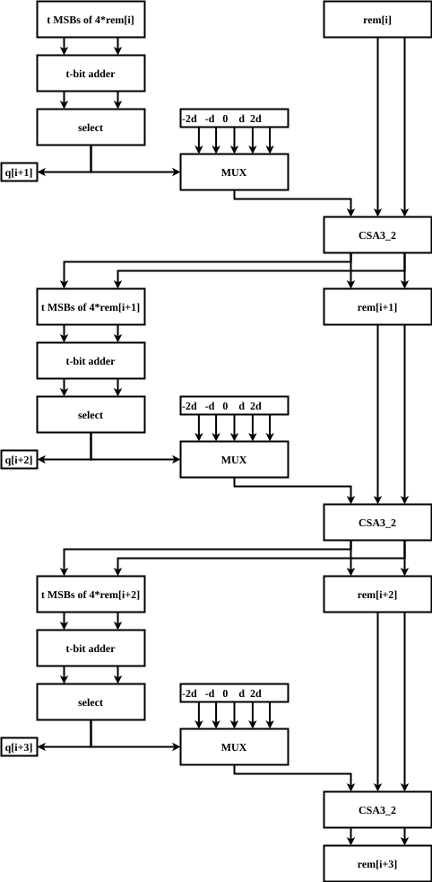
オペランド前スケーリング
前スケーリングでは除数を 1 に近い範囲へ調整し、商選択を除数非依存にする。Radix-4 アルゴリズムの場合、除数を \([1 - 1/64, 1 + 1/8]\) に収めれば十分である。次の表に前スケーリング係数の真理値表を示す。ビット列は除数の上位 3 ビットを表し、該当する係数で除数を 1～2 倍に拡大する。被除数も同係数でスケーリングする必要がある。
| \(0.1\)xxx | 前スケーリング係数 |
|---|---|
| 000 | \(1 + 1/2 + 1/2\) |
| 001 | \(1 + 1/4 + 1/2\) |
| 010 | \(1 + 1/2 + 1/8\) |
| 011 | \(1 + 1/2 + 0\) |
| 100 | \(1 + 1/4 + 1/8\) |
| 101 | \(1 + 1/4 + 0\) |
| 110 | \(1 + 0 + 1/8\) |
| 111 | \(1 + 0 + 1/8\) |
整数桁の商計算
整数桁の商計算は、数字反復 (各反復は 3 回の Radix-4 で構成され、\(s0\)・\(s1\)・\(s2\) の 3 段階) に次の情報を提供する。
- Carry-Save で表す冗長余り \(f\_r\_s\) と \(f\_r\_c\)。
- 前スケーリング済み除数 \(divisor\)。
- 初回の数字反復 \(s0\) 段の商選択に用いる 6 ビット余り。
- 初回の数字反復 \(s1\) 段の商選択に用いる 7 ビット余り。
数字反復
実際の除算器は 1 サイクルで 3 回の Radix-4 反復を実行する。順次 3 回の反復を行うだけでは遅く、タイミングを満たせないため論理を最適化する。次図は数字反復ループのブロック図である。
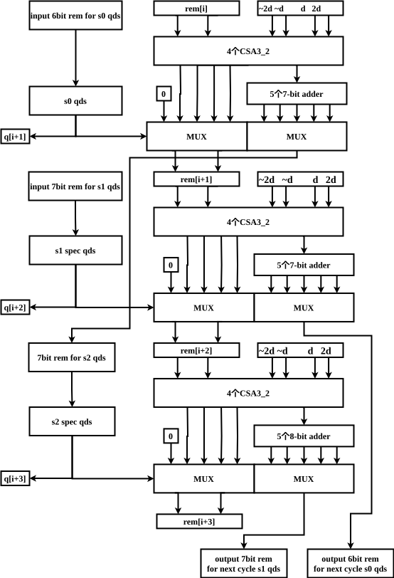
- 除数に処理を施し、商選択に必要な 5 種類の除数倍数を用意する (商が負の場合は反転のみ)。
- \(s0\) 段は 4 個の CSA (商 0 のときは不要) を用い、同時に \(s1\) 段が必要とする 5 種類の冗長余りを予測計算する。
- \(s0\) 段で得た 5 種の冗長余りから \(s2\) 段が参照する 5 種類の 7 ビット余りを予測計算する。
- 入力の 6 ビット余りに基づき \(s0\) 段の商を選択する。商は 5 ビットの 1-hot で表現する。
- \(s0\) の商を依拠し、\(s1\) 段で使用する冗長余りを選び、同時に手順 3 で求めた \(s2\) 用 7 ビット余りから 1 種類を選択する。
- \(s1\) 段は 4 個の CSA (商 0 のときは不要) を用い、\(s2\) 段が必要とする 5 種類の冗長余りを予測計算する。
- \(s1\) 段は入力の 7 ビット余り、5 種の除数倍数、\(s0\) の商に基づき \(s1\) の商を予測選択する。
- \(s1\) の商に応じて \(s2\) 段が用いる冗長余りを決定する。
- \(s2\) 段は 4 個の CSA (商 0 のときは不要) を用い、次回数字反復の \(s0\) が必要とする 5 種類の冗長余りを予測計算する。
- \(s2\) 段は次回数字反復の \(s0\) 用 6 ビット余りと \(s1\) 用 7 ビット余りをそれぞれ 5 パターン予測計算する。
- \(s2\) 段は手順 5 で選んだ 7 ビット余り、5 種の除数倍数、\(s1\) の商に基づき \(s2\) の商を予測選択する。
- \(s2\) の商選択結果から次回数字反復の冗長余り、\(s0\) 用 6 ビット余り、\(s1\) 用 7 ビット余りを決定する。
手順 1 で除数倍数を反転するだけで \(+1\) を行わないため、余り計算に偏差が生じる。商選択に補正ロジックを追加して修正する。次の表に標準的な商選択関数を、続けて補正後の関数を示す。
| \(4 × rem[i]\) | \(q_{i+1}\) |
|---|---|
| \([13/8, 31/8]\) | +2 |
| \([4/8, 12/8]\) | +1 |
| \([-3/8, 3/8]\) | 0 |
| \([-12/8, -4/8]\) | −1 |
| \([-32/8, -13/8]\) | −2 |
| \(4 × rem[i]\) | \(carry\) | \(q_{i+1}\) |
|---|---|---|
| \(31/8\) | 1 | +2 |
| \([13/8,30/8]\) | - | +2 |
| \(12/8\) | 0 | +2 |
| \(12/8\) | 1 | +1 |
| \([4/8,11/8]\) | - | +1 |
| \(3/8\) | 0 | +1 |
| \(3/8\) | 1 | 0 |
| \([-3/8,2/8]\) | - | 0 |
| \(-4/8\) | 0 | 0 |
| \(-4/8\) | 1 | −1 |
| \([-12/8,-5/8]\) | - | −1 |
| \(-13/8\) | 0 | −1 |
| \(-13/8\) | 1 | −2 |
| \([-32/8,-14/8]\) | - | −2 |
数字反復が出力する冗長余りを標準余りへ戻し、オンザフライ変換 (On the Fly Conversion) で商と「商−1」を計算する。両者に対してそれぞれ grs と丸めビットを用意し、丸めの繰り上げ要否を算出する。選商ロジックで商と商−1 のどちらを採用すべきか決め、正しい商と対応する丸め情報を基に最終丸めを行う。
非正規化数と早期終了
- 入力に非正規化数が含まれる場合、仮数が 1 未満で正規数と同時に前スケーリングできない。1 サイクル追加し、仮数の正規化と指数調整を行う。
- 結果が非正規化数になる場合、数字反復の商は 1 を超えるため非正規化の範囲に収まらない。追加の 1 サイクルで商を右シフトして正規化する。
- 早期終了は 2 種類ある。結果が \(NaN\)・無限大・正確な 0 のときは第 1 サイクルで判定可能なため、第 2 サイクルで結果を出力する。除数が 2 の冪で仮数が 1 のときも指数演算だけで済むため数字反復を省略でき、第 2 サイクルで結果を出せる。ただし被除数または結果が非正規化数の場合は追加サイクルが必要になる。
ベクトル浮動小数点除算アルゴリズム
RISC-V のベクトル拡張には混合精度の浮動小数点除算が定義されていないため、次の演算をサポートすればよい。
- \(1\) 組の \(f64 = f64 / f64\)
- \(2\) 組の \(f32 = f32 / f32\)
- \(4\) 組の \(f16 = f16 / f16\)
ベクトル除算は複数の演算を同時に処理するが、早期終了を導入すると各結果の出力タイミングが揃わなくなる。全て同条件で早期終了しない限り同期が崩れるため、ベクトル除算では早期終了を無効化し、該当ケースは内部で結果を保持して他の除算と同時に出力する。
タイミングを統一するため、除算器は最悪ケース (入力と出力の両方に非正規化数を含む) のサイクル数を基準とする。結果を早く計算できるケースでも内部で保持し、規定サイクルでまとめて出力する。
設計はリソース共有を基本とし、数字反復以外のモジュールで以下の共用を行う。
- \(1\) 組の \(f64/f32/f16 = f64/f32/f16 / f64/f32/f16\)
- \(1\) 組の \(f32/f16 = f32/f16 / f32/f16\)
- \(2\) 組の \(f16 = f16 / f16\)
4 組の信号で 7 組の除算を実現する。
数字反復モジュールはクリティカルパスであり時序が厳しいため、非数字反復部のような高度な共用は困難である。このため数字反復部は次のように部分共用とする。
- インターフェイスは商と冗長余りを持つ 4 組。
- \(s0\) 段は 7 組の CSA と 7 組の予測回路、4 組の商選択を用いる。
- \(s1\) と \(s2\) 段はそれぞれ 4 組の CSA・予測・商選択を用いる。
レジスタも共用し、除数・冗長余り・商などは \(max(4×f16, 2×f32, 1×f64)\) に必要なビット数を上限に配分する。
ハードウェア設計
ベクトル浮動小数点加算器
スカラ単一精度浮動小数点加算器
改良二経路浮動小数点加算アルゴリズムに基づきスカラ単一精度浮動小数点加算器を設計する。ハードウェア構成は図の通りである。
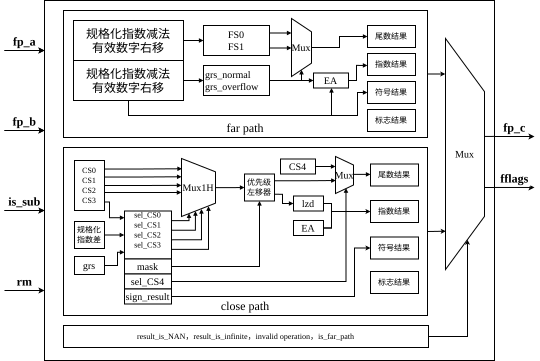
左側の入力 \(fp\_a\)、\(fp\_b\) を加算し、右側の \(fp\_c\) として結果を出力する。\(fflags\) は 5 ビットの例外フラグ、\(rm\) は 5 種類の丸めモードを 3 ビットで指定する。\(is\_sub=0\) のとき \(fp\_c = fp\_a + fp\_b\)、\(is\_sub=1\) のとき \(fp\_c = fp\_a - fp\_b\) を計算する。浮動小数点減算は \(fp\_b\) の符号を反転させるだけで加算器と共通化できる。全体は far 経路、close 経路、例外経路の 3 ブロックで構成される。
far 経路では指数差に応じて 2 通りの規格化指数減算と仮数右シフトを並列に行い、\(E_{fp\_a} ≥ E_{fp\_b}\) と \(E_{fp\_b} ≥ E_{fp\_a}\) の双方を処理する。指数比較結果から正しい右シフト値を選択して \(FS0\) と \(FS1\) の仮数加算器へ送る。減算時は \(E_A\) を 1 減らし、加算時は \(E_A\) をそのまま用いることで仮数加算結果の値域を \([1,4)\) に揃える。右シフト時に値域 \([1,2)\) 用の grs\_normal と \([2,4)\) 用の grs\_overflow を生成し、丸めモードに応じて \(FS0\) か \(FS1\) を選択する。同時に指数は必要なら \(E_A+1\) を採用し、指数が全 1 になる場合をオーバーフローとして検出する。far 経路で発生する例外はオーバーフローと非正確のみである。
close 経路は \(CS0\)～\(CS3\) の 4 本の仮数加算器で \(E_{fp\_a} = E_{fp\_b}\)、\(E_{fp\_a} = E_{fp\_b} + 1\)、\(E_{fp\_a} = E_{fp\_b} - 1\) を処理する。\(CS0\) 結果と grs から 4 つの 1-hot 選択信号 \(sel\_CS0\)〜\(sel\_CS3\) を生成し、4 入力 1-hot Mux (\(Mux1H\)) で結果を選択、左シフトマスクを OR して優先度付き左シフタで仮数正規化を行う。左シフト時に \(lzd\) を求め、指数結果は \(E_A - lzd\) となる。仮数は正規化済みの値と \(CS4\) のどちらかを選択し、符号は指数差と \(CS0\) 結果から決定する。例外は非正確のみが発生する。
例外経路は無効演算・NaN・無限大を検出し、該当しなければ far または close 経路の結果とフラグを選択する。
スカラ混合精度浮動小数点加算器
スカラ単一精度加算器を拡張して混合精度に対応させる。主な違いは形式変換の追加であり、結果が \(f32\) の場合を例に真理値表を示す。
| \(res\_widen\) | \(opb\_widen\) | \(f32\) 演算 |
|---|---|---|
| 0 | 0 | \(f32 = f32 + f32\) |
| 1 | 0 | \(f32 = f16 + f16\) |
| 1 | 1 | \(f32 = f16 + f32\) |
| 0 | 1 | 許可されない |
次図に混合精度加算器の構成を示す。入力側に高速形式変換モジュールを追加し、操作種別に応じてオペランドを結果形式へ変換した後、単一精度と同じフローで処理する。
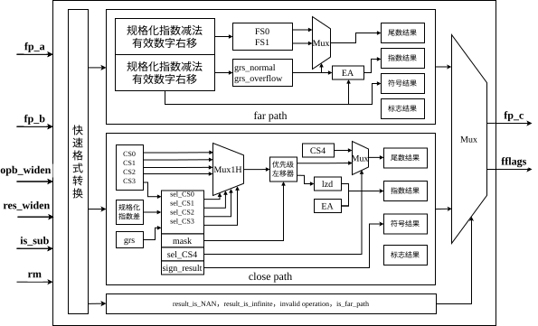
ベクトル浮動小数点加算器
ベクトル加算器の構成を次図に示す。タイミングを満たすため 4 つのモジュールで構成し、FloatAdderF64Widen が 64 ビット結果、FloatAdderF32WidenF16 が 16/32 ビット結果、FloatAdderF16 が 16 ビット専用を担当する。
fp\_format は 2 ビットで結果形式を指定し、00 が \(f16\)、01 が \(f32\)、10 が \(f64\) を表す。例外フラグ fflags は 20 ビットで下位優先に並び、\(f16\) のとき 20 ビット全て、\(f32\) のとき下位 10 ビット、\(f64\) のとき下位 5 ビットが有効である。
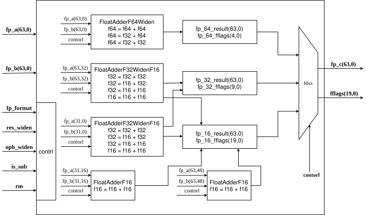
ベクトル浮動小数点加算器は 2 段パイプラインで設計し、結果を約 1.5 サイクルで生成して早期ウェイクアップを実現する。パイプライン境界は各サブモジュール内部に設け、1 段のレジスタを挿入する。以下に 3 種のモジュールのパイプライン位置を示す。
FloatAdderF64Widen は far 経路の仮数右シフト後と close 経路の \(Mux1H\) 後にレジスタを挿入する。
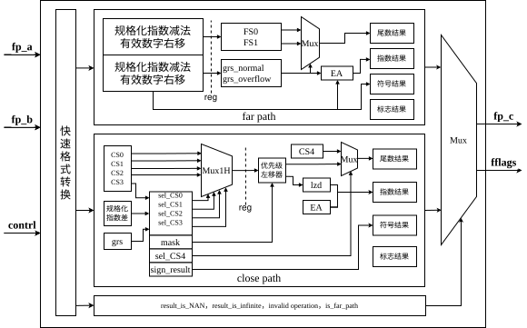
FloatAdderF32WidenF16 は 2 種類の出力形式を処理し、第 2 サイクルの選択ロジックが複雑なため、far 経路の加算器中にレジスタを挿入する。第 1 サイクルで下位 18 ビットと上位部を分けて加算し、第 2 サイクルでキャリーを加えて完成させる。close 経路は \(Mux1H\) 後にレジスタを置く。
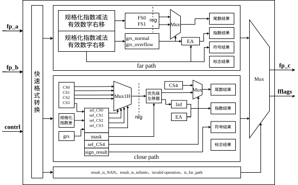
FloatAdderF16 はタイミング余裕が大きく、far 経路の仮数右シフト後と close 経路の \(Mux1H\) 後にレジスタを配置する。
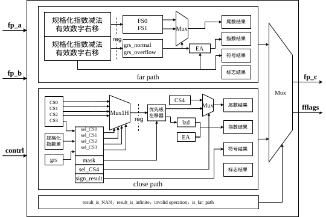
インターフェイス説明
上述のベクトル加算器は 64 ビット幅で、2 つのオペランドがいずれもベクトル形式であることを前提としている。しかし RVV ではベクトル同士 (vv) だけでなく、ベクトルとスカラ (vf) の形式も規定されている。また widening 命令ではソースレジスタが目的レジスタの半分幅で、低位または高位からデータを取得するケースがある。
RVV の全浮動小数点命令をサポートし、VLEN 拡張にも対応するため、ベクトル加算器に簡易命令の実装を加え、ベクトル浮動 ALU (VFALU) として提供する。改造は機能面とインターフェイス面の 2 つに分かれる。
VFALU がサポートする操作コードは 16 種で、w は widening を示す。vfmerge、vfmove、vfclass はオペランド構成が特殊で、vfmerge.vfm はベクトルレジスタ・浮動レジスタ・マスクレジスタの 3 オペランド、vfmove.v.f は浮動レジスタ 1 つ、vfclass はベクトルレジスタ 1 つを取る。
| \(op\_code\) | 指令 | 形式 | 説明 |
|---|---|---|---|
| 0 | \(vf(w)add\) | \(vv,vf\) | 加算 |
| 1 | \(vf(w)sub\) | \(vv,vf\) | 減算 |
| 2 | \(vfmin\) | \(vv,vf\) | 最小値 |
| 3 | \(vfmax\) | \(vv,vf\) | 最大値 |
| 4 | \(vfmerge\) | \(vfm\) | データ結合 |
| 5 | \(vfmove\) | \(v.f\) | データ移動 |
| 6 | \(vfsgnj\) | \(vv,vf\) | 符号注入 |
| 7 | \(vfsgnjn\) | \(vv,vf\) | 反転符号注入 |
| 8 | \(vfsgnjx\) | \(vv,vf\) | XOR 符号注入 |
| 9 | \(vmfeq\) | \(vv,vf\) | 等値比較 |
| 10 | \(vmfnq\) | \(vv,vf\) | 不等比較 |
| 11 | \(vmflt\) | \(vv,vf\) | 小なり比較 |
| 12 | \(vmfle\) | \(vv,vf\) | 以下比較 |
| 13 | \(vmfgt\) | \(vf\) | 大なり比較 |
| 14 | \(vmfge\) | \(vf\) | 以上比較 |
| 15 | \(vfclass\) | \(v\) | 分類 |
ベクトル加算器との差分インターフェイスを次表に示す。widen_a と widen_b に混合精度ソースを入力し、ソースと結果形式が同じなら fp_a、fp_b を使い、異なる場合は widen_a、widen_b を使う。uop_idx=0 で低位、uop_idx=1 で高位を選択する。is_frs1=1 のときソース vs1 は浮動レジスタ frs1 から読み出してベクトルへ複製する。mask は merge 命令で使用する。
| インターフェイス | 方向 | 幅 | 説明 |
|---|---|---|---|
| \(fp\_a\) | 入力 | 64 | ソース \(vs2\) |
| \(fp\_b\) | 入力 | 64 | ソース \(vs1\) |
| \(widen\_a\) | 入力 | 64 | widening 後の \(vs2\) |
| \(widen\_b\) | 入力 | 64 | widening 後の \(vs1\) |
| \(frs1\) | 入力 | 64 | 浮動レジスタデータ |
| \(is\_frs1\) | 入力 | 64 | \(vs1\) が浮動レジスタ由来であることを示す |
| \(mask\) | 入力 | 4 | merge 命令のマスク |
| \(uop\_idx\) | 入力 | 1 | widening 時に高低半部を選択 |
| \(round\_mode\) | 入力 | 3 | 丸めモード |
| \(fp\_format\) | 入力 | 2 | 浮動小数点形式 |
| \(res\_widening\) | 入力 | 1 | widening 指令 |
| \(opb\_widening\) | 入力 | 1 | \(vs1\) が結果形式と同じかどうか |
| \(op\_code\) | 入力 | 5 | 操作コード |
| \(fp\_result\) | 出力 | 64 | 計算結果 |
| \(fflags\) | 出力 | 20 | 例外フラグ |
ベクトル浮動小数点融合乗算加算器
パイプライン構成
ベクトル浮動小数点融合乗算加算器は 4 段パイプライン設計を採用し、早期ウェイクアップを実現するため、乗算加算結果を約 \(3.5\) サイクルで計算完了させる。ベクトル器の遅延は \(3.5\) サイクルである。次図はベクトル浮動小数点融合乗算加算器のアーキテクチャ図であり、図中の \(reg\_0\) は第1段レジスタ、\(reg\_1\) は第2段レジスタ、\(reg\_2\) は第3段レジスタを表す。ベクトル浮動小数点融合乗算加算器も \(widen\) 機能をサポートするが、その \(widen\) 機能は \(f32 = f16 × f16 + f32\) と \(f64 = f32 × f32 + f64\) の 2 つのケースのみであるため、出力形式が確定している状況下では、わずか 1 ビットの \(widen\) 信号で制御できる。出力される \(fflags\) も \(20\) ビットであり、ベクトル浮動小数点加算器と同じ表現方式を取る。
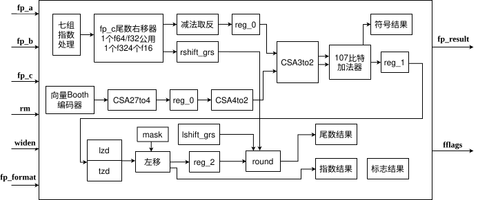
タイミング制約を満たしながら面積を節約するため、リソース共有の実装方式を採用する。すべてのデータ形式の計算は同一のベクトル \(Booth\) エンコーダと \(CSA\) 圧縮を通じて行い、間隔を空けた配置により \(107\) ビット加算器もリソース共有を実現している。
第1サイクルでは、7組の指数処理を行い7個の右シフト値を得て、計算形式に応じて対応する右シフト値を選択する。右シフタに関しては、\(f64\) の右シフタと1個の \(f32\) を共用し、別途独立した \(1\) 個の \(f32\)、\(4\) 個の \(f16\) 右シフタを設置する。減算を行う場合、\(fp\_c\) の仮数の右シフト結果を反転した後、第1段レジスタへ入力する。第1サイクルでは同時にベクトル \(Booth\) エンコードを行い、\(27\) 個の部分積を生成し、\(CSA\) を用いて \(4\) 個の部分積へ圧縮してからレジスタに保存する。
第2サイクルでは、残りの \(4\) 個の部分積に対して \(CSA4\_2\) 圧縮を行い、その後、第1サイクルで計算された仮数の右シフト結果と \(CSA3\_2\) 圧縮を行い、次に \(107\) ビット加算を実行して第2段レジスタに保存する。
第3サイクルでは、第2サイクルの加算結果に対して \(lzd\) と \(tzd\) を行い、その後、\(mask\) 制限付きの左シフトを実行し、左シフト結果を第3段レジスタに保存する。
第4サイクルでは丸めを行い、仮数の結果を得る。第3サイクルの左シフト状況に基づいて指数の結果を計算し、符号ビットは第2サイクルの \(107\) ビット加算器から得られる。フラグの結果としては、オーバーフロー、アンダーフロー、無効演算、非正確の4種類のフラグビットが生成され得る。アンダーフローの検出方式に注意が必要である。\(IEEE-754\) はアンダーフローを検出する2つの方式、\(before \quad rounding\) と \(after \quad rounding\) を規定しており、本設計では \(RISC-V\) が選択した \(after \quad rounding\) 方式を用いてアンダーフローを検出する。
インターフェイス説明
\(RVV\) の命令定義に基づき、ベクトル浮動小数点融合乗算加算器を再利用して乗算を計算できるようにし、\(op\_code\) で制御する。乗算を計算する際、内部で加数をゼロに設定する。同時に、\(RVV\) は一連の浮動小数点融合乗算加算命令を規定しており、主に符号ビットとオペランドの順序の違いである。ベクトル浮動小数点融合乗算加算器を改造してすべての関連命令をサポートする \(VFMA\) とし、\(op\_code\) とインターフェイスを追加する。次表は \(VFMA\) のオペコードであり、合計 \(9\) 種類の操作があり、すべて \(vv\) と \(vf\) の2種類のオペランド形式をサポートする。\(vf\) の場合、\(vs1[i]\) は浮動小数点レジスタ \(frs1\) に置き換えられる。
| \(op\_code\) | 対応命令 | オペランド形式 | 意味 |
|---|---|---|---|
| \(0\) | \(vf(w)mul\) | \(vv,vf\) | \(vd[i] = vs2[i] × vs1[i]\) |
| \(1\) | \(vf(w)macc\) | \(vv,vf\) | \(vd[i] = +(vs1[i] × vs2[i]) + vd[i]\) |
| \(2\) | \(vf(w)nmacc\) | \(vv,vf\) | \(vd[i] = -(vs1[i] × vs2[i]) - vd[i]\) |
| \(3\) | \(vf(w)msac\) | \(vv,vf\) | \(vd[i] = +(vs1[i] × vs2[i]) - vd[i]\) |
| \(4\) | \(vf(w)nmsac\) | \(vv,vf\) | \(vd[i] = -(vs1[i] × vs2[i]) + vd[i]\) |
| \(5\) | \(vfmadd\) | \(vv,vf\) | \(vd[i] = +(vs1[i] × vd[i]) + vs2[i]\) |
| \(6\) | \(vfnamdd\) | \(vv,vf\) | \(vd[i] = -(vs1[i] × vd[i]) - vs2[i]\) |
| \(7\) | \(vfmsub\) | \(vv,vf\) | \(vd[i] = +(vs1[i] × vd[i]) - vs2[i]\) |
| \(8\) | \(vfnmsub\) | \(vv,vf\) | \(vd[i] = -(vs1[i] × vd[i]) + vs2[i]\) |
次表は \(VFMA\) のインターフェイスである。制御ロジックの複雑度を簡素化するため、\(VFMA\) へ送る3つのオペランドの順序は \(vs2、vs1、vd\) に固定し、機能ユニット内部で \(op\_code\) に応じて順序を入れ替える。\(fma\) 命令の \(widen\) 時は加数が目標形式に固定されるため、\(widen\_a\) と \(widen\_b\) を追加するだけで十分である。\(uop\_idx\) は同様に \(widen\_a\) と \(widen\_b\) の高位または低位半部を選択するために使用され、\(frs1\) と \(is\_frs1\) は \(vf\) 命令をサポートするために使用される。
| インターフェイス | 方向 | ビット幅 | 意味 |
|---|---|---|---|
| \(fp\_a\) | \(input\) | \(64\) | ソースオペランド \(vs2\) |
| \(fp\_b\) | \(input\) | \(64\) | ソースオペランド \(vs1\) |
| \(fp\_c\) | \(input\) | \(64\) | ソースオペランド \(vd\) |
| \(widen\_a\) | \(input\) | \(64\) | \(widen\_vs2\) |
| \(widen\_b\) | \(input\) | \(64\) | \(widen\_vs1\) |
| \(frs1\) | \(input\) | \(64\) | 浮動小数点レジスタデータ |
| \(is\_frs1\) | \(input\) | \(64\) | 加数が浮動小数点レジスタデータに由来 |
| \(uop\_idx\) | \(input\) | \(1\) | \(widen\) 時に高位/低位半部を選択 |
| \(round\_mode\) | \(input\) | \(3\) | 丸めモード |
| \(fp\_format\) | \(input\) | \(2\) | 浮動小数点形式 |
| \(res\_widening\) | \(input\) | \(1\) | \(widen\) 命令 |
| \(op\_code\) | \(input\) | \(5\) | オペコード |
| \(fp\_result\) | \(output\) | \(64\) | 計算結果 |
| \(fflags\) | \(output\) | \(20\) | フラグビット |
ベクトル浮動小数点除算器
スカラ浮動小数点除算器
スカラ浮動小数点除算器は3種類の形式の計算をサポートする。\(1\) 個の \(f16 = f16 / f16\)、\(1\) 個の \(f32 = f32 / f32\)、\(1\) 個の \(f64 = f64 / f64\) である。除算器は \(Radix-64\) アルゴリズムを採用し、反復モジュールは毎サイクル3回の \(Radix-4\) 反復を実行して \(Radix-64\) を実現する。次図はスカラ浮動小数点除算器のアーキテクチャ図である。除算器はブロッキング実行であり、計算中は次の除算操作を受け付けられないため、ハンドシェイク信号による制御が必要である。本設計では \(start-valid\) ハンドシェイク信号を採用する。\(CPU\) では分岐予測失敗によりパイプラインの状態を \(flush\) する状況が発生するため、除算器内部の状態をクリアする \(flush\) 信号を専用に設け、次のサイクルで直ちに新しい除算計算を開始できるようにしている。
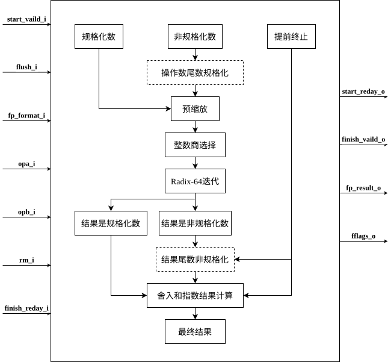
入力データは3種類の状況に分類される。すべてが規格化数(除数が \(2\) の累乗を含まない)、少なくとも1つが非正規化数、早期終了(入力に \(NaN\)、無限大、ゼロが含まれる、または除数が \(2\) の累乗)である。結果は2種類の状況に分かれる。結果が規格化数、結果が非正規化数である。
入力がすべて規格化数(除数が \(2\) の累乗を含まない)の場合、仮数はすべて規格化されており、この時、直ちに前スケーリング段階に入る。入力に少なくとも1つの非正規化数が含まれる場合、入力がすべて規格化数の場合と比較して、前スケーリングの前に、仮数の正規化のためにさらに1サイクルを追加する。
前スケーリング段階は1サイクルであり、続いて整数商選択を行い、2ビットの整数商結果を選択し出し、\(Radix-4\) 反復のために前スケーリング後の除数、被除数、および余りの桁上げ保存冗長表現を提供する。\(Radix-4\) 反復モジュールは毎サイクル \(6\) ビットの商を計算し、\(f16\) 除算には \(2\) サイクルの \(Radix-4\) 反復が必要であり、\(f32\) 除算には \(6\) サイクルの \(Radix-4\) 反復が必要であり、\(f64\) 除算には \(9\) サイクルの \(Radix-4\) 反復が必要である。\(Radix-4\) 反復完了後、得られる仮数商の結果の範囲は \((1, 2)\) である。結果が規格化数の場合、丸めと指数結果の計算のために1サイクルのみ必要であり、最終的な除算結果を得ることができる。結果が非正規化数の場合、丸めの前にさらに1サイクルを追加して商の結果を非正規化する必要がある。
早期終了は2種類の状況に分かれる。入力オペランドに \(NaN\)、無限大、ゼロが含まれる場合、除算計算を行う必要がなく、第2サイクルで結果を出力できる。除数が \(2\) の累乗の場合、第1サイクルで指数結果を求めることができ、結果が非正規化ステップを必要としない場合、第2サイクルで結果を出力できる。結果が非正規化ステップを必要とする場合、さらに1サイクルを追加し、第3サイクルで結果を出力する。
浮動小数点除算器の実際の実装では、サイクル毎に3回の \(radix-4\) 反復を実行する必要がある。従来の順次的な3回の反復では速度が遅すぎてタイミング要件を満たせないため、ロジックを最適化した。図に数字反復ループのブロック図を示す。
早期終了は2種類の状況に分かれる。入力オペランドに \(NaN\)、無限大、ゼロが含まれる場合、除算計算を行う必要がなく、第2サイクルで結果を出力できる。除数が \(2\) の累乗の場合、第1サイクルで指数結果を求めることができ、結果が非正規化ステップを必要としない場合、第2サイクルで結果を出力できる。結果が非正規化ステップを必要とする場合、さらに1サイクルを追加し、第3サイクルで結果を出力する。
次表は異なるデータ形式の状況におけるスカラ除算器の必要計算サイクル数である。\(+1\) は除算結果が非正規化数の場合にさらに1サイクルを追加して後処理を行うことを表す。早期終了の状況下では、すべてのデータ形式の除算操作を \(1\) ~ \(2\) サイクルで完了する。早期終了しない状況下では、\(f16\) 除算は \(5\) ~ \(7\) サイクルで除算を完了し、\(f32\) 除算は \(7\) ~ \(9\) サイクルで除算を完了し、\(f64\) 除算は \(12\) ~ \(14\) サイクルで除算を完了する。
| データ形式 | 規格化数 | 非正規化数 | 早期終了 |
|---|---|---|---|
| \(f16\) | \(5+1\) | \(6+1\) | \(1+1\) |
| \(f32\) | \(7+1\) | \(8+1\) | \(1+1\) |
| \(f64\) | \(12+1\) | \(13+1\) | \(1+1\) |
ベクトル浮動小数点除算器
次図はベクトル浮動小数点除算器のアーキテクチャ図である。スカラ浮動小数点除算器と比較して、ベクトル除算計算では同時に複数組の除算を計算するため、すべての結果を計算完了してから統一してレジスタファイルへ書き戻す必要があることを考慮すると、単一除算の早期終了はベクトル除算の高速化にあまり意味がないため、出力結果の遅延が不確定という特性を取り消した。どのような状況でも、入力されるデータ形式に基づいて、ベクトル浮動小数点除算器の遅延数は確定している。次表に示す通りである。
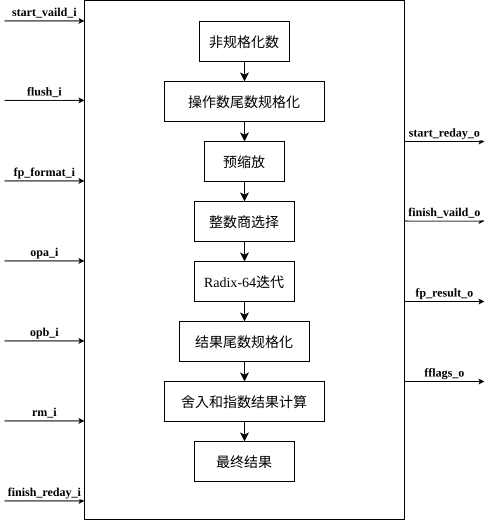
| データ形式 | 計算サイクル |
|---|---|
| \(f16\) | \(7\) |
| \(f32\) | \(11\) |
| \(f64\) | \(14\) |
ハードウェア設計においては、\(Radix-64\) 反復モジュールを除き、ベクトル浮動小数点除算器はロジック再利用方式を採用し、4組の信号を用いて計算と制御を行う。第1組は \(f64\_0\) または \(f32\_0\) または \(f16\_0\) の計算に使用され、第2組は \(f32\_1\)、\(f16\_1\) の計算に使用され、第3組は \(f16\_2\) の計算に使用され、第4組は \(f16\_3\) の計算に使用される。レジスタについても再利用方式を採用して中間結果を格納し、レジスタのビット幅は \(max\)(\(1\) 個の \(f64\)、\(2\) 個の \(f32\)、\(4\) 個の \(f16\))に従って、最大要求を満たす。一方、\(Radix-64\) 反復モジュールはクリティカルパスであり、タイミング要求を満たしながらできるだけ面積を節約する。第1回の \(Radix-4\) 反復は \(7\) 組の独立した \(CSA\) と商選択を使用し、第2、第3回の \(Radix-4\) 反復は \(4\) 組の再利用された \(CSA\) と商選択を使用する。
インターフェイス説明
\(RVV\) が規定するベクトル浮動小数点除算命令は3つである。
① \(vfdiv.vv \quad vd[i] = vs2[i]/vs1[i]\)
② \(vfdiv.vf \quad vd[i] = vs2[i]/f[rs1]\)
③ \(vfrdiv.vf \quad vd[i] = f[rs1]/vs2[i]\)
このうち③は比較的特殊であり、オペランドの順序が①②と異なる。ベクトル除算ユニットに対して、第1オペランドは制御ロジックから \(vs2[i]/f[rs1]\) を伝え、第2オペランドは \(vs1[i]/ f[rs1]/vs2[i]\) を伝えるため、機能ユニットから見ると、被除数はベクトルまたはスカラ形式であり、除数もベクトルまたはスカラ形式である。したがって、2つのスカラデータインターフェイスを追加する必要がある。インターフェイスを追加後、モジュール名を \(VFDIV\) とする。インターフェイスは次表に示す通りである。
| インターフェイス | 方向 | ビット幅 | 意味 |
|---|---|---|---|
| \(start\_valid\_i\) | \(input\) | \(1\) | ハンドシェイク信号 |
| \(finish\_ready\_i\) | \(input\) | \(1\) | ハンドシェイク信号 |
| \(flush\_i\) | \(input\) | \(1\) | フラッシュ信号 |
| \(fp\_format\_i\) | \(input\) | \(2\) | 浮動小数点形式 |
| \(opa\_i\) | \(input\) | \(64\) | 被除数 |
| \(opb\_i\) | \(input\) | \(64\) | 除数 |
| \(frs2\_i\) | \(input\) | \(64\) | 浮動小数点レジスタに由来する被除数データ |
| \(frs1\_i\) | \(input\) | \(64\) | 浮動小数点レジスタに由来する除数データ |
| \(is\_frs2\_i\) | \(input\) | \(1\) | 被除数が浮動小数点レジスタに由来 |
| \(is\_frs1\_i\) | \(input\) | \(1\) | 除数が浮動小数点レジスタに由来 |
| \(rm\_i\) | \(input\) | \(3\) | 丸めモード |
| \(start\_ready\_o\) | \(output\) | \(1\) | ハンドシェイク信号 |
| \(finish\_valid\_o\) | \(output\) | \(1\) | ハンドシェイク信号 |
| \(fpdiv\_res\_o\) | \(output\) | \(64\) | 計算結果 |
| \(fflags\_o\) | \(output\) | \(20\) | フラグビット |
ベクトル形式変換モジュール VCVT
VCVT は 3 段パイプライン構成のベクトル形式変換モジュールである。64 ビットデータを扱う VectorCvt サブモジュールを 2 個備え、それぞれに cvt64、cvt32、2 個の cvt16 を含む。cvt64 は 64/32/16/8 ビットの浮動・整数形式に対応し、cvt32 は 32/16/8 ビット、cvt16 は 16/8 ビットに対応する。結果として VectorCvt は同時に 1×64 ビット、または 2×32 ビット、4×16 ビット、4×8 ビットの形式変換を実行できる。
全体構成
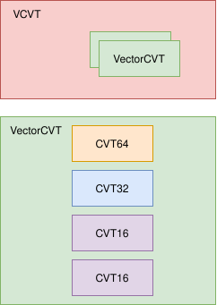
モジュール構成
CVT モジュールは単幅・加幅・縮小の浮動/整数形式変換に加え、ベクトル浮動の逆平方根推定と逆数推定命令をサポートする。
データ幅 width に応じて適切な cvt モジュールを選択し、命令種別ごとに fp2int、int2fp、fp2fp、vfr の 4 クラスに分けて実装する。fcvt64 では入力 64 ビットデータの形式を統一する。
\(different \quad width \quad unsigned/signed \quad int -> 65 \quad signed \quad int\)
\(f16/f32/f64 -> 65bit（f64 \#\# false.B）\)
形式統一後、変換プロセスでは、入力データの種類、ビット幅、フィールドの位置をある程度区別する必要がなくなります。
これを基に、\(VFCVT64\) は \(5\) つのカテゴリに分けられます：\(int -> fp，fp -> fp widen，fp -> fp narrow，estimate7(rsqrt7\) & \(rec7)，fp -> int\)。
FuopType のデコード
CVT 命令の fuopType は 9 ビットで、各ビットの意味は次の通りである。下位 6 ビット [5:0] は仕様書に準拠し、上位 [8:6] は制御信号生成を簡便にするために追加した。
[8]: 1 なら move 命令、0 なら CVT 命令またはvfrsqrt7/vfrec7。[7]: 1 なら入力が浮動、0 なら整数。[6]: 1 なら出力が浮動、0 なら整数。[5]: 1 ならvfrsqrt7/vfrec7、0 なら CVT。1 のとき[0]でvfrsqrt7とvfrec7を区別する。[4:3]:00が単幅、01が加幅 (widen)、10が縮小 (narrow)。[2:0]: 命令に応じた詳細ビット。浮動⇔整数変換では[0]が整数の符号有無を示し、その他では[2:1]=11がrtz、[2:0]=101がrod (vfncvt_rod_ffw)を表す。